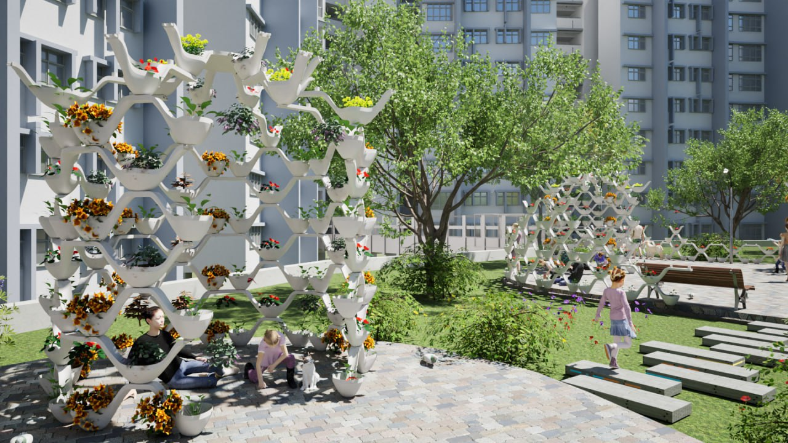
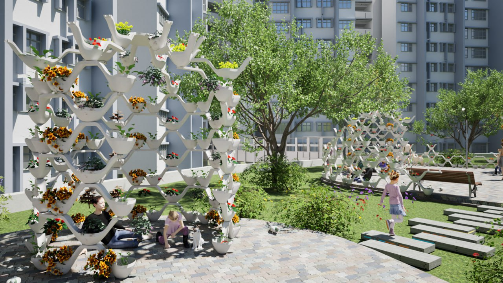

Our group project, Celestine Canopy, was awarded:
- Best Project in Spatial Design World Module 2024
- Top 3 Project in Design Thinking Project III Showcase 2024
Task I: Research
We began with the shared goal of designing a vertical community garden that addresses both food security challenges and mental health concerns in Singapore.
Our team identified a target demographic and studied existing initiatives in food security and mental health. We also explored the potential adverse impacts of our product and proactively devised mitigation strategies to ensure community wellbeing.
Task II: Design & Prototyping
We initiated this phase with a detailed site analysis of the proposed installation location. This informed our design ideation, where we explored geometric patterns and forms inspired by waveforms and lines.

The final concept emerged from reimagining a spoon as a modular planter—symbolizing nourishment and care. We iterated on the design, incorporating user-centric features and refinements to maximize functionality and appeal.

After multiple iterations, we prototyped our final design through 3D rendering and printing, bringing Celestine Canopy to life.
 

Task III: Modelling & Analysis
We investigated how the angle of connection between modular units and the depth of the planter “spoons” affects the average food yield per plant. Through parametric modeling, we explored the relationship between physical configuration and agricultural output.


Skills Developed
- User-centered design
- Collaborative ideation and problem-solving
- Conceptual and aesthetic design exploration
- CAD modeling, rendering, and prototyping
Tools & Platforms
Rhinoceros 7
Excel
Canva
Twinmotion